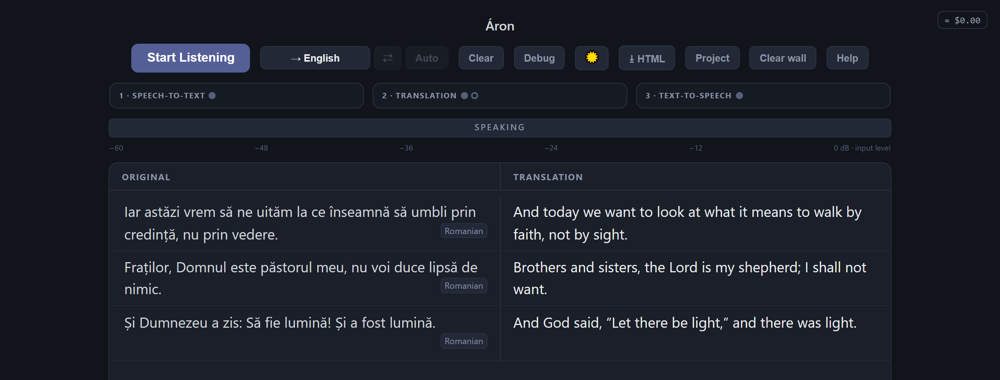
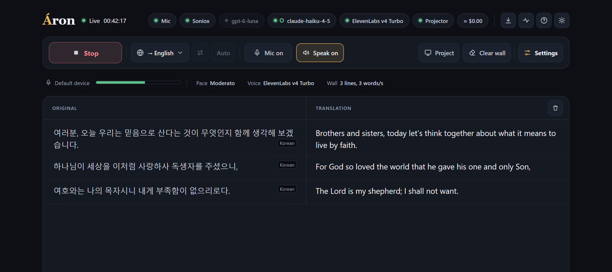
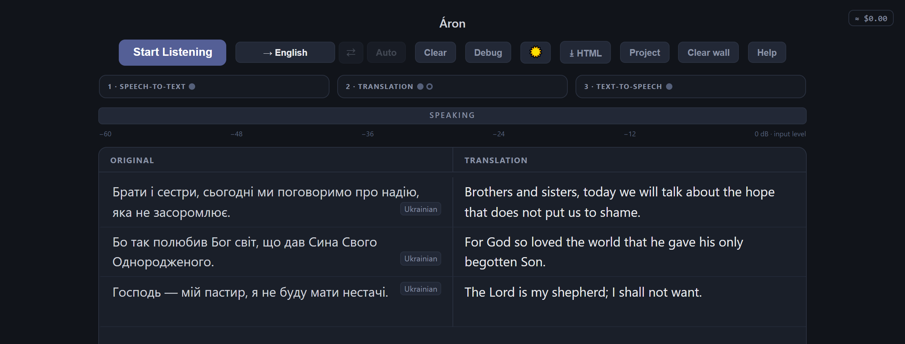
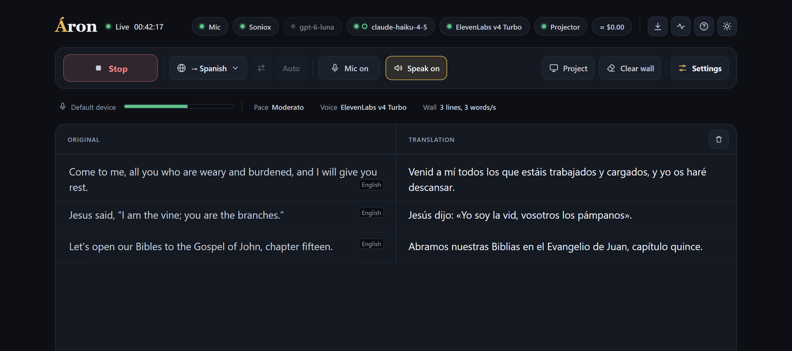
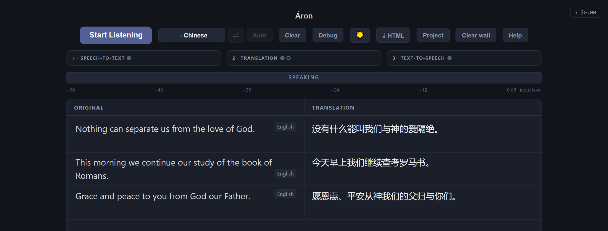
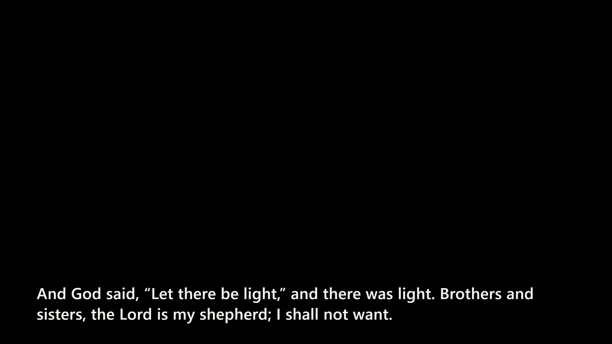
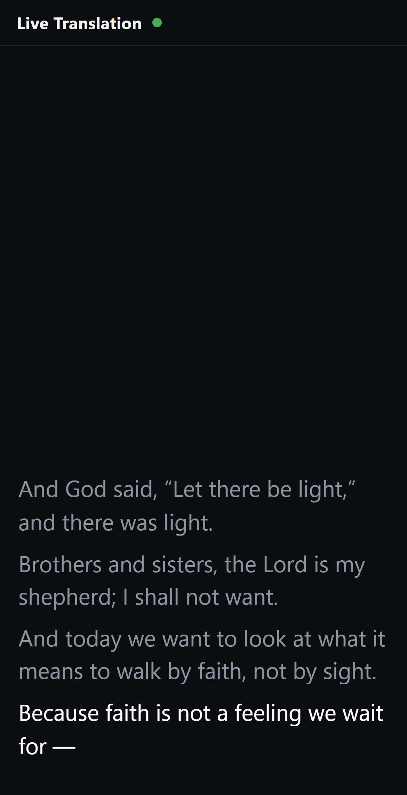

“He shall speak for you to the people, and he shall be your mouth.” Exodus 4:16
Áron is free software that captions your service live, in your congregation's language. You connect it to top professional speech and AI models with your own keys and pay those companies directly. There's no subscription and no markup.
Free and MIT licensed · Windows 10/11 · from about $0.15 an hourÁron is free. No seats, no plans, no account with us.
Soniox, Claude, GPT, Gemini, ElevenLabs. You pay the provider directly, by the hour or by the word.
Professional live captions for the cost of the speech recognition. Add AI translation or a spoken voice only if you want them.





The operator screen: what's said on the left, the translation on the right, as it happens.
The same live translation goes to the big screen, to ProPresenter, and to phones in the pews or at home.

A clean caption strip for the auditorium screen, or straight into ProPresenter as a web object or message.

Put a QR code in the bulletin. People follow along on their own phones, with optional audio.
60 spoken languages are detected automatically and captioned in up to 150 languages. Bilingual services flip direction automatically.
It translates verses as Scripture and keeps names, books and references exactly as the preacher said them.
It catches mis-hears and uncouth expressions before they reach the wall. Strong Scripture language is still translated faithfully.
Optional voice output for headphones or a side room. It can even use the speaker's own voice, with their permission.
Download the translated audio, timed subtitles and a side-by-side transcript afterwards.
It runs on your church's computer. Audio goes only to the providers you choose. We never see it.
Áron understands a sermon in 60 languages and works out which one by itself. What it can put on screen, and say aloud, depends on the keys you add.
The preacher can speak any of these. Your Soniox key is all it takes.
Soniox translates into its own 60 with the one key. Add an OpenAI key and GPT‑6 Sol writes 150.
| Language | Soniox | GPT‑6 Sol |
|---|---|---|
| Afrikaans | ✓ | ✓ |
| Albanian | ✓ | ✓ |
| Amharic | – | ✓ |
| Arabic | ✓ | ✓ |
| Armenian | – | ✓ |
| Assamese | – | ✓ |
| Aymara | – | ✓ |
| Azerbaijani | ✓ | ✓ |
| Basque | ✓ | ✓ |
| Belarusian | ✓ | ✓ |
| Bemba | – | ◐ |
| Bengali | ✓ | ✓ |
| Bhojpuri | – | ✓ |
| Bosnian | ✓ | ✓ |
| Breton | – | ✓ |
| Bulgarian | ✓ | ✓ |
| Burmese | – | ✓ |
| Cantonese | – | ✓ |
| Catalan | ✓ | ✓ |
| Cebuano | – | ✓ |
| Chichewa | – | ✓ |
| Chinese (Simplified) | ✓ | ✓ |
| Chinese (Traditional) | – | ✓ |
| Chuukese | – | ✓ |
| Croatian | ✓ | ✓ |
| Czech | ✓ | ✓ |
| Danish | ✓ | ✓ |
| Dhivehi | – | ◐ |
| Dholuo | – | ✓ |
| Dutch | ✓ | ✓ |
| English | ✓ | ✓ |
| Estonian | ✓ | ✓ |
| Ewe | – | ◐ |
| Faroese | – | ✓ |
| Fijian | – | ✓ |
| Finnish | ✓ | ✓ |
| French | ✓ | ✓ |
| Fula | – | ✓ |
| Galician | ✓ | ✓ |
| Georgian | – | ✓ |
| German | ✓ | ✓ |
| Greek | ✓ | ✓ |
| Guarani | – | ◐ |
| Gujarati | ✓ | ✓ |
| Haitian Creole | – | ✓ |
| Hakha Chin | – | ◐ |
| Hausa | – | ✓ |
| Hawaiian | – | ✓ |
| Hebrew | ✓ | ✓ |
| Hiligaynon | – | ✓ |
| Hindi | ✓ | ✓ |
| Hmong | – | ✓ |
| Hungarian | ✓ | ✓ |
| Icelandic | – | ✓ |
| Igbo | – | ✓ |
| Ilocano | – | ✓ |
| Indonesian | ✓ | ✓ |
| Irish | – | ✓ |
| Italian | ✓ | ✓ |
| Japanese | ✓ | ✓ |
| Javanese | – | ✓ |
| K'iche' | – | ◐ |
| Kachin (Jingpho) | – | ◐ |
| Kannada | ✓ | ✓ |
| Kazakh | ✓ | ✓ |
| Khmer | – | ✓ |
| Kikuyu | – | ✓ |
| Kinyarwanda | – | ✓ |
| Kirundi | – | ✓ |
| Korean | ✓ | ✓ |
| Krio | – | ◐ |
| Kurdish (Kurmanji) | – | ✓ |
| Kurdish (Sorani) | – | ✓ |
| Kyrgyz | – | ✓ |
| Lao | – | ✓ |
| Latin | – | ✓ |
| Latvian | ✓ | ✓ |
| Lingala | – | ✓ |
| Lithuanian | ✓ | ✓ |
| Luganda | – | ✓ |
| Luxembourgish | – | ✓ |
| Macedonian | ✓ | ✓ |
| Maithili | – | ✓ |
| Malagasy | – | ✓ |
| Malay | ✓ | ✓ |
| Malayalam | ✓ | ✓ |
| Maltese | – | ✓ |
| Marathi | ✓ | ✓ |
| Marshallese | – | ✓ |
| Mizo | – | ✓ |
| Mongolian | – | ✓ |
| Māori | – | ✓ |
| Nepali | – | ✓ |
| Nigerian Pidgin | – | ✓ |
| Northern Sotho | – | ✓ |
| Norwegian | ✓ | ✓ |
| Occitan | – | ◐ |
| Odia | – | ✓ |
| Oromo | – | ✓ |
| Pashto | – | ✓ |
| Persian | ✓ | ✓ |
| Polish | ✓ | ✓ |
| Portuguese | ✓ | ✓ |
| Punjabi | ✓ | ✓ |
| Quechua | – | ◐ |
| Romanian | ✓ | ✓ |
| Russian | ✓ | ✓ |
| S'gaw Karen | – | ✓ |
| Samoan | – | ✓ |
| Scottish Gaelic | – | ✓ |
| Serbian | ✓ | ✓ |
| Sesotho | – | ✓ |
| Setswana | – | ✓ |
| Shona | – | ✓ |
| Sindhi | – | ✓ |
| Sinhala | – | ✓ |
| Slovak | ✓ | ✓ |
| Slovenian | ✓ | ✓ |
| Somali | – | ✓ |
| Spanish | ✓ | ✓ |
| Sundanese | – | ✓ |
| Swahili | ✓ | ✓ |
| Swedish | ✓ | ✓ |
| Tagalog | ✓ | ✓ |
| Tajik | – | ✓ |
| Tamil | ✓ | ✓ |
| Tatar | – | ✓ |
| Telugu | ✓ | ✓ |
| Tetum | – | ◐ |
| Thai | ✓ | ✓ |
| Tibetan | – | ✓ |
| Tigrinya | – | ✓ |
| Tok Pisin | – | ✓ |
| Tongan | – | ✓ |
| Tsonga | – | ✓ |
| Turkish | ✓ | ✓ |
| Turkmen | – | ✓ |
| Twi | – | ✓ |
| Ukrainian | ✓ | ✓ |
| Urdu | ✓ | ✓ |
| Uyghur | – | ✓ |
| Uzbek | – | ✓ |
| Vietnamese | ✓ | ✓ |
| Waray | – | ✓ |
| Welsh | ✓ | ✓ |
| Wolof | – | ✓ |
| Xhosa | – | ✓ |
| Yiddish | – | ◐ |
| Yoruba | – | ✓ |
| Zulu | – | ✓ |
✓ natural · ◐ understandable, word for word. We tested GPT‑6 Sol on a real sermon passage; Soniox's list is the provider's own. Other translators in Áron write fewer: Gemini 3.5 Flash Lite 126, Claude Haiku 4.5 62.
Optional. Soniox's voice uses the same key; ElevenLabs needs its own. A language with no voice is still captioned.
| Language | Soniox | ElevenLabs |
|---|---|---|
| Afrikaans | ✓ | ✓ |
| Albanian | ✓ | – |
| Arabic | ✓ | ✓ |
| Armenian | – | ✓ |
| Assamese | – | ✓ |
| Azerbaijani | ✓ | ✓ |
| Basque | ✓ | – |
| Belarusian | ✓ | ✓ |
| Bengali | ✓ | ✓ |
| Bosnian | ✓ | ✓ |
| Bulgarian | ✓ | ✓ |
| Burmese | – | ✓ |
| Cantonese | – | ✓ |
| Catalan | ✓ | ✓ |
| Cebuano | – | ✓ |
| Chichewa | – | ✓ |
| Chinese (Simplified) | ✓ | ✓ |
| Chinese (Traditional) | ✓ | ✓ |
| Croatian | ✓ | ✓ |
| Czech | ✓ | ✓ |
| Danish | ✓ | ✓ |
| Dutch | ✓ | ✓ |
| English | ✓ | ✓ |
| Estonian | ✓ | ✓ |
| Finnish | ✓ | ✓ |
| French | ✓ | ✓ |
| Galician | ✓ | ✓ |
| Georgian | – | ✓ |
| German | ✓ | ✓ |
| Greek | ✓ | ✓ |
| Gujarati | ✓ | ✓ |
| Hausa | – | ✓ |
| Hebrew | ✓ | ✓ |
| Hindi | ✓ | ✓ |
| Hungarian | ✓ | ✓ |
| Icelandic | ✓ | ✓ |
| Indonesian | ✓ | ✓ |
| Irish | – | ✓ |
| Italian | ✓ | ✓ |
| Japanese | ✓ | ✓ |
| Javanese | – | ✓ |
| Kannada | ✓ | ✓ |
| Kazakh | ✓ | ✓ |
| Korean | ✓ | ✓ |
| Kyrgyz | – | ✓ |
| Latvian | ✓ | ✓ |
| Lingala | – | ✓ |
| Lithuanian | ✓ | ✓ |
| Luxembourgish | – | ✓ |
| Macedonian | ✓ | ✓ |
| Malay | ✓ | ✓ |
| Malayalam | ✓ | ✓ |
| Maltese | – | ✓ |
| Marathi | ✓ | ✓ |
| Mongolian | – | ✓ |
| Māori | – | ✓ |
| Nepali | – | ✓ |
| Norwegian | ✓ | ✓ |
| Occitan | – | ✓ |
| Odia | – | ✓ |
| Pashto | – | ✓ |
| Persian | ✓ | ✓ |
| Polish | ✓ | ✓ |
| Portuguese | ✓ | ✓ |
| Punjabi | ✓ | ✓ |
| Romanian | ✓ | ✓ |
| Russian | ✓ | ✓ |
| Serbian | ✓ | ✓ |
| Sindhi | – | ✓ |
| Slovak | ✓ | ✓ |
| Slovenian | ✓ | ✓ |
| Somali | – | ✓ |
| Spanish | ✓ | ✓ |
| Sundanese | ✓ | – |
| Swahili | ✓ | ✓ |
| Swedish | ✓ | ✓ |
| Tagalog | ✓ | ✓ |
| Tajik | – | ✓ |
| Tamil | ✓ | ✓ |
| Telugu | ✓ | ✓ |
| Thai | ✓ | ✓ |
| Turkish | ✓ | ✓ |
| Ukrainian | ✓ | ✓ |
| Urdu | ✓ | ✓ |
| Uzbek | ✓ | ✓ |
| Vietnamese | ✓ | ✓ |
| Welsh | ✓ | ✓ |
| Yoruba | – | ✓ |
ElevenLabs v4 and v4 Turbo; the providers' own lists.
Every default was chosen by testing against hours of recorded sermons. Where accuracy and speed pull apart, accuracy wins.
Most of a sermon is plain speech, and it goes up the moment it's heard. A quick AI check reads every line; the doubtful ones, about one in ten, go to a stronger model to redo. You get speed on the easy lines and quality where it matters.
Áron isn't tied to one company. It works with Soniox, Claude, GPT, Gemini, Grok and ElevenLabs, and new models are tested on real sermons as they launch and added when they earn it. You pick your preference from a menu. The accounts are yours, so there's no vendor lock-in.
Today's top models know idioms, regional words and the shape of a sermon. Áron gives them the lines just before, your church's glossary and its Scripture rules, so a figure of speech comes out as what it means, not word for word.
Speech recognition sometimes hears a wrong word that sounds right: a name, a feast day, a short word swallowed by the room. The translator reads the whole thought and fixes it from context. An optional second listener helps with the hardest cases.
It waits for a sentence or a natural pause instead of flashing half-phrases that change as you read them.
That's the typical gap from spoken word to screen at the default pace. Slide the Pace bar for quicker pieces or fuller sentences.
Paid church translation services are convenient. Here's what you trade for that convenience.
| Áron | Typical paid service | |
|---|---|---|
| Software | Free, MIT licensed | Monthly subscription or per-minute fee |
| Model costs | Paid to the providers at list price, from about $0.15 an hour | Bundled into the fee, with the vendor's margin on top |
| Which models | You choose, including the strongest available | The vendor chooses, and often doesn't say which. On a flat fee, every stronger model eats into their margin. |
| New models | Tested on sermons and added as they launch | Whenever the vendor upgrades |
| Sermon-aware | Scripture rules, church glossary, idioms, reverent wording | Usually general-purpose translation |
| Your data | Runs on your computer. Audio goes only to the providers you pick. | Passes through the vendor's servers |
| Lock-in | None. The keys and accounts are yours. | Contract and account with the vendor |
| Support | Quick start guide and GitHub. You run it yourself. | A support team, and nothing to run |
"Typical" means what we've seen across the market; individual services differ.
These are the providers' own list prices, paid to them directly. Áron shows a running total in the corner while you use it.
Per hour of speech, at the providers' published rates as of October 2026. Songs and silence cost nothing. You're billed by the providers, not by us.
Get church-translate.exe and .env.example from the latest release. There's nothing to install.
Create a free Soniox account, paste the key into .env, and you're set. Add other keys later if you like.
Double-click the app, pick your congregation's language and click Start Listening.
Yes. The software is free and MIT licensed. You only pay the speech and AI providers for what you use, at their own published prices, and you're billed by them directly. Most churches start with a single Soniox key at about $0.15 per hour of speech.
It recognizes 60 spoken languages automatically and captions into all 60 with Soniox alone, and up to 150 with GPT‑6 Sol, from Spanish and Korean to Karen, Hmong and Amharic. The full tables list them, and which can also be spoken. For a bilingual service it switches direction by itself when the speaker changes language.
Yes. Point a ProPresenter web object at Áron's caption strip, or let Áron send the live translation into a ProPresenter message. There's also a plain full-screen caption page for any projector.
Yes. Áron can stream captions, and optionally the spoken translation, to a page on your church's website. Put a QR code in the bulletin and people read along in the room or from home.
A Windows 10 or 11 computer with an internet connection and an audio feed from your sound desk or a microphone. All the heavy work runs in the cloud, so you don't need a powerful machine or any special hardware.
Many paid services are built on the same kind of cloud speech and AI models and charge a subscription or per-minute rate on top. Áron lets you use the best models directly, at their own price, with nobody in between. See the comparison.
Let everyone in the room hear the sermon.Free for every church, in every language.